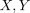
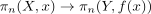
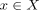
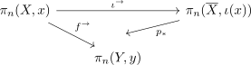
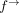
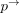

whitehead theorem for kan complexes
1. Proposition
Let

be Kan complexes, a morphism of simplicial sets.a
a morphism of simplicial sets.a
TFAE:
 is a simplicial homotopy equivalence
is a simplicial homotopy equivalence- induces a Bijection on pi0 of a simplicial set and isomorphism

for each
and (cf. homotopy group of kan complex)
(cf. homotopy group of kan complex)
2. Proof
2.1. 1)  2)
2)
2.2. 2) 1)
Suppose
Since

commutes. As

is a BijectionUsing two out of three for isomorphisms we conclude that

is a bijection